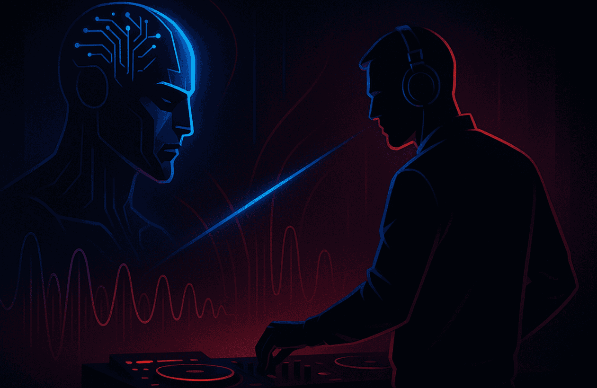

Like many areas of life today, DJing is undergoing a scorching revolution, where artifacts of the past are being torched and reincarnated - a transformation ignited by artificial intelligence.
In this piece, I share my thoughts on why DJs must understand and use AI, while also highlighting my favorite AI-powered tools and techniques.
What AI can do for DJs:
- Reduce the logistical legwork of DJing: Organization, key and BPM crunching, phrasing, etc.
- Enable more complex technical processes: Stem separation, auto mixing, and syncing beats.
- Expand your capacity for creative, expressive performances.
- Act as a co-pilot for suggesting tracks and navigating a large music library.
What AI can't do for DJs
- Replace the exciting, human performance and physical presence of watching a live DJ.
- Improvise beyond the data: While it can provide logical suggestions, rarely will it take bold, unexpected risks or create magical serendipity.
- Understand the emotional “why” behind a track choice: AI can suggest songs based on data, but not live the experiences that shape taste.
Unlock Your AI-Powered DJing Potential with PulseDJ!
PulseDJ is an AI copilot for DJs. In real time, it analyzes the tracks you're playing, and then suggests the best songs to follow up with. Based on the analysis of over 1.8 million parties and DJ sets.
It's user-friendly, but powerful.
How To Use PulseDJ:
- Open your DJ software (compatible with Serato, rekordbox, Traktor, Virtual DJ, and djay Pro).
- Open up the PulseDJ pilot window.
- Start mixing and playing songs in your software.
- PulseDJ will listen to each song you play, then list the most compatible and hottest tracks to mix.
- You copy the song title, find it in your library, and load it up onto the next deck.
- Voila! Your AI copilot has just helped you make the perfect mix.
It makes the mixing experience feel more fluid and requires less mental energy - so you can focus on the fun parts of the performance! This DJ app is intuitive and simple, so you can just download it and start creating immediately.
And the best part? It's completely free. No trials, no subscriptions, paywalls, and no BS. Just a powerful tool that's ready to unlock your creative potential.
Download PulseDJ Today

The Truth About AI for DJs

Look, I get it. The rise of AI has a lot of people spooked. The " robots are coming for our jobs " narrative is a tale as old as the calculator, and the DJ world is no exception.
We're a passionate bunch, and the idea of a machine replicating the innately human art of reading a crowd and creating the perfect musical journey seems equally (and paradoxically) threatening and impossible.
But let's be real: AI isn't going to kill DJing - but it is going to change the game. In this industry, if you're not adapting, you're already falling behind. Think about how the transition from vinyl to digital changed everything, or how streaming platforms like Spotify altered how we discover music. The DJs who are stuck in their ways, who refuse to adapt, will struggle to compete. It's as simple as that.
The truth is, AI is set to reshape the landscape of DJing in ways we're only just beginning to understand. To not only survive, but to thrive, you need to be prepared to ride the wave. You need to understand what AI can do for you, how to harness its power, and how to make it your own secret weapon.
This isn't about letting a computer do your art for you; it's about augmenting your skills, unlocking new creative processes, and using technology to make your life easier.
The Best AI DJ Tools, Techniques, and Software
AI-enhanced DJing isn't some far-off, futuristic concept. AI is already deeply embedded in the workflows of top-tier DJs, and it's giving them a serious edge.
The applications go way beyond a simple sync button. Here’s how the pros are leveraging AI to redefine what's possible:
Track Recommendations on Steroids
Forget just matching BPMs and keys. AI-powered recommendation engines are a whole different beast. Some platforms, like VirtualDJ , have incorporated real-time recommendation engines. However, in practice, these suggestions can often feel generic, relying heavily on basic key and BPM matching without grasping the deeper textural and energetic connections between tracks. This can lead to predictable or even jarring transitions.
I've never really found that the approach of BPM and key matching works well - seen in solutions like rekordbox , Traktor, and Virtual DJ. Sure, the technical elements of the recomendations match up, but that's about it. There is no consideration for what vibe of music actually works together, or what tunes people normally play.
A more sophisticated approach analyzes the harmonic content, rhythmic structure, and even the emotional color of a track to suggest seamless transitions and unexpected blends you might never have thought of. Or even better, a large data set of historical DJ mixes.
This is where a tool like PulseDJ makes a significant difference. It analyzes tracks in real-time and suggests the best next songs based on a massive dataset of what works in real-world DJ sets, giving you suggestions that are musically relevant and crowd-tested. With over a million parties and playlists analyzed, you can pretty much gurantee that the suggestions are going to hit.
The integration of the Top 100 is also great for finding the most popular tunes to drop.
Intelligent Playlist Curation and Set Flow
Beyond suggesting the next track, AI can now help structure an entire set. By analyzing your broader media library, including your personal library of tracks, and understanding your stylistic preferences, AI tools like DJ.Studio can help you build crates and playlists for specific vibes, durations, or energy levels.
I use AI tools to help me map out a narrative arc for my sets, suggesting peaks, troughs, and transitions to take my audience on a truly intentional journey, rather than just playing a string of random bangers.
The Magic of Real-Time Stem Separation
This is a game-changer, plain and simple. For years, the dream has been to have studio-level control over individual elements of a track in a live setting. This technology is now a staple feature in leading software like Serato's Stems , VirtualDJ's Real-Time Stems , and Algoriddim's Neural Mix Pro , each allowing you to isolate vocals, drums, basslines, and melodies on the fly.
You could be crafting intricate live mashups that sound studio-produced, grabbing unique samples from one track to layer over another, or dropping an acapella from SoundCloud over a completely different instrumental, creating a unique moment for the crowd. I find stem separation to be one of the most exciting and mind-boggling creative audio tools out there today.
Automated Harmonic Mixing and Key Shifting
While DJs have been mixing in key for decades, AI takes it to another level. Modern software can not only identify perfectly matched keys but also perform flawless, real-time key-shifting.
This means you can blend two songs that were originally harmonically incompatible by subtly adjusting the tempo or pitching one up or down to match the other, all while maintaining pristine audio quality without any of the distorted artefacts you'd get from older technology.
These automatic key changes make seemingly impossible mixes sound smooth and natural.
Your New Marketing and Media Guru
Let's be honest, most DJs would rather be behind the decks than behind a keyboard. Beyond the booth, AI is a powerhouse for creating promotional content.
From generating videos for social media clips or YouTube to writing compelling copy for your event descriptions that actually get people excited, AI tools can handle the heavy lifting.
This can even extend to creating summaries of your latest mix recording for promotional purposes, freeing you up to focus on what you do best: the music.
I've been following AI - particularly its applications in my creative interests - since 2015, and it's becoming clearer how vast and far-reaching the implications are. These effects have become significantly more noticeable in the last two years, and the rate is showing no sign of slowing down.
For DJs and artists willing to embrace the change, AI isn't a threat - it's arguably the most powerful creative partner you'll ever have. However, I think it's clear that artists who don't explore and harness the power of AI risk being left in the ashes.
FAQs About AI DJ Software
Is there an AI DJ software?
Yes. Modern DJ software like Virtual DJ and djay Pro AI now includes powerful AI features, while dedicated tools like PulseDJ act as an AI assistant alongside your existing software. A platform like djay Pro AI, which has won multiple Apple Design Awards, showcases this with its sophisticated integration with streaming services.
These tools can intelligently recommend tracks, create seamless transitions, and even separate your favorite songs into individual elements (vocals, drums, etc.) in real-time for live remixing using features like Neural Mix.
Is there an AI tool for mixing music?
There are a few different AI tools for mixing music - Pulse DJ is the latest exciting tool, acting as a DJ co-pilot, suggesting the best tracks to drop next in your mix. The best part? All the pro features are included in the free version - the app is totally free!
Can AI DJ mixers replace human DJs?
No. AI is a powerful tool, but it can't replace the essential human element of DJing. A great DJ reads the crowd's energy, understands culture, and creates an emotional connection to connect with people through music - skills that are uniquely human. Plus, many of these advanced features require a stable internet connection to function, something a human DJ doesn't depend on. AI is an assistant, not a replacement.
‹ DJ Music Library: How To Create And Organize